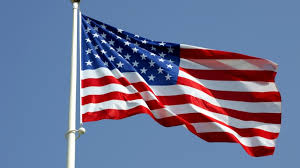

Some necessary components of good citizenship are honesty, compassion, respect, responsibility, and courage. Citizenship is being a good citizen for your country and respecting yourself and other people. Honesty is being truthful to yourself and to other people. This a very important trait to have because if everyone is honest, that will help us to not have as many issues as we have today. Compassion is having sympathy and being nice to everyone. This is important because being nice to everyone can also save us from many issues, and everyone will be happier if they are being treated well. Respect is being respectful for everything and everyone, no matter their race or ethnicity. Respect is a very important trait to have because no one should be treated poorly only because they are different from others. Responsibility is taking care of yourself and your own well-being. It is very important to be responsible for yourself because other people cannot take care of you and be responsible for you. Courage is the ability to do things that may scare you, or that you may not do regularly. This is an important quality to have because if you are corageous, it will help you to go outside of your comfort zone and to reach out to others more.
One additional component of being a good citizen is helping others. No one can do everything on their own, and when people get help from someone it makes it much easier to complete a certain task. The most recent act of citizenship that I performed was participating in the Relay for Life event this past May. Relay for Life is a fun way to raise awarness and money for cancer research. This was an act of citizenship because by raising money for the American Cancer Society, I was helping other people who are in need of assistance.
Link to Contract 